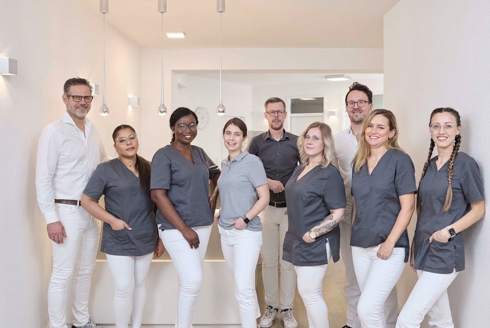
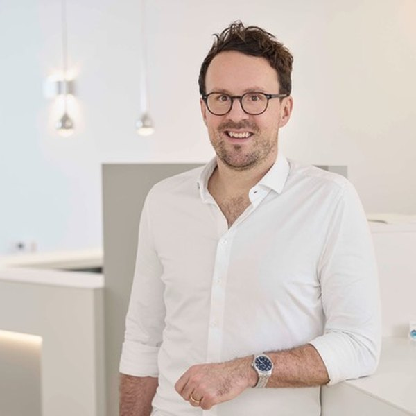
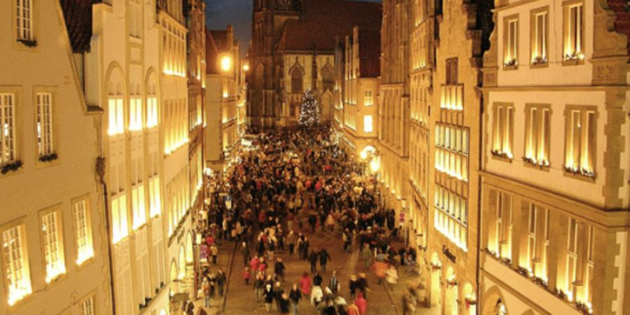
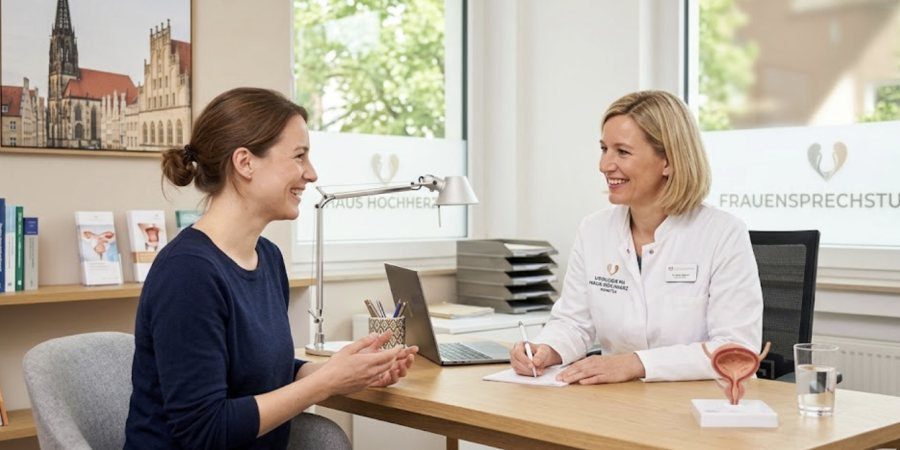
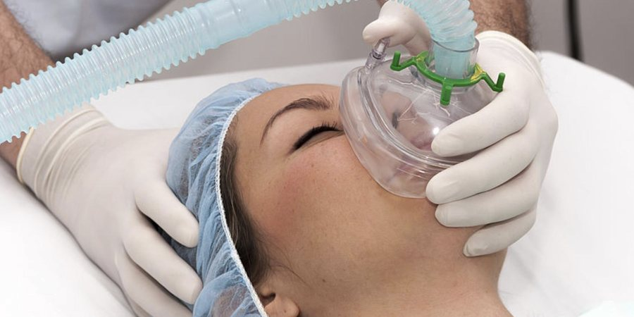
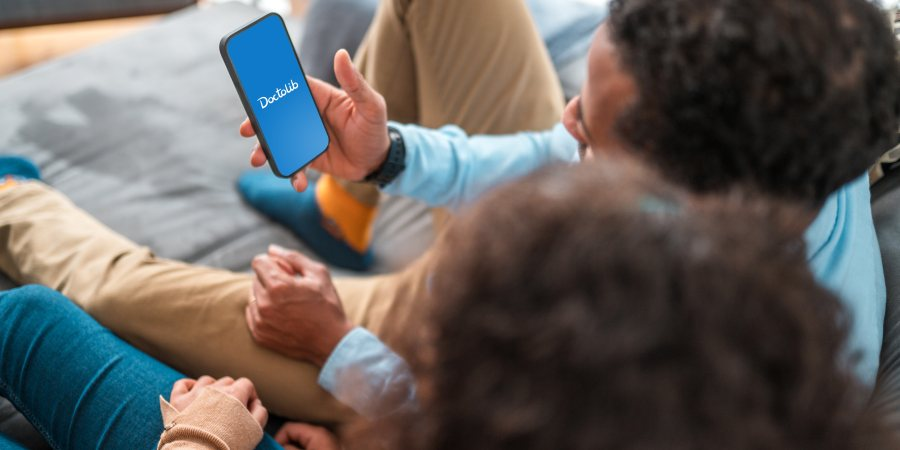

Herzlich willkommen in der Urologischen Gemeinschaftspraxis im Haus Hochherz (Rothenburg 2).
Dr. med. Robert Ostendorf, Dr. med. Enno Humborg und Eva-Maria Röhrig begleiten Männer, Frauen und Kinder mit modernster Diagnostik, sanfter Endoskopie und persönlicher Zuwendung.
Ihre urologische Facharztpraxis im Herzen von Münster
Liebe Patientinnen und Patienten, herzlich willkommen in der Urologischen Gemeinschaftspraxis im Haus Hochherz. Als Ihre Fachärzte für Urologie in Münster bieten wir Ihnen ein umfassendes medizinisches Leistungsspektrum – von der modernen Vorsorge über die spezialisierte Diagnostik bis hin zu individuellen Therapien.
Wir verstehen uns als vertrauensvoller Partner für Ihre Gesundheit. Urologische Beschwerden sind oft sensibel; deshalb stehen bei uns neben medizinischer Präzision auf dem neuesten wissenschaftlichen Stand vor allem Einfühlungsvermögen, Diskretion und Zeit für das persönliche Gespräch im Mittelpunkt.
Wichtiger Tipp für Ihren Praxisbesuch:
Bitte erscheinen Sie zu Ihrem Termin – sofern möglich – mit einer gefüllten Blase, da für eine fundierte Diagnostik meist eine frische Urinprobe sowie ein Ultraschall der Harnblase erforderlich sind.
Entgegen einem verbreiteten Vorurteil ist die Urologie kein reines „Männerfach“. Wir behandeln Erkrankungen der Nieren, Harnblase und Harnwege bei Patientinnen und Patienten jeden Alters – diskret, leitliniengerecht und familienorientiert.
Urologie für den Mann
Umfassende Vorsorge, Prostata-Diagnostik, Männergesundheit und Familienplanung in vertrauensvoller Atmosphäre.
Kindgerechte, geduldige und schmerzfreie Untersuchung für unsere jüngsten Patientinnen und Patienten.
Einfühlsame Abklärung bei kindlichem Einnässen (Enuresis)
Beratung & konservative Therapie bei Vorhautverengung (Phimose)
Kontrolle bei Hodenhochstand (Maldeszensus testis)
Schmerzfreie hochauflösende Ultraschalldiagnostik
Abklärung fieberhafter oder wiederkehrender Harnwegsinfekte
Vertrauensvolle Beratung für Eltern & Kinder
Medizinisches Spektrum
Unsere Leistungen auf modernstem Niveau
Wir verbinden leitliniengerechte Spitzenmedizin mit modernster technischer Ausstattung – von der strahlenfreien Hochleistungs-Sonographie über die flexible NBI-Video-Endoskopie bis zum eigenen Praxislabor.
Urologische Vorsorge & Früherkennung
Viele urologische Tumorerkrankungen verursachen im Frühstadium keinerlei Beschwerden. Durch gezielte Vorsorge lassen sich Veränderungen frühzeitig und mit besten Heilungschancen erkennen.
Gesetzliche Vorsorge ab 45 J. (ab 40 J. bei familiärem Risiko)
Farbdoppler-Sonographie von Nieren, Blase, Prostata & Hoden
Moderne Urin- & Blasentumormarker-Diagnostik
Prävention & Sicherheit
Flexible Video-Zystoskopie & NBI
Vor einer Blasenspiegelung muss heute niemand mehr Angst haben: Wir arbeiten mit besonders dünnen, flexiblen Video-Endoskopen, die sich der Anatomie sanft anpassen.
Maximal schonende, schmerzarme Untersuchung
Narrow Band Imaging (NBI): Optisches Speziallicht macht selbst kleinste Schleimhautveränderungen sichtbar
Auf Wunsch auch in sanfter Kurznarkose durchführbar
High-Tech-Endoskopie
Prostata-, Stein- & Onkologie-Therapie
Ob gutartige Prostatavergrößerung, akute Nierenkolik oder komplexe Krebserkrankung: Wir erstellen einen auf Sie zugeschnittenen Therapie- und Nachsorgeplan.
Medikamentöse & konservative Therapie der Prostata (BPH)
Leitliniengerechte Tumornachsorge & Zweitmeinung
Akuttherapie & Stoffwechselabklärung bei Nierensteinen
Enge Kooperation mit den führenden Kliniken im Münsterland
Therapie & Nachsorge
Blasenentzündungen & Kontinenz
Wiederkehrende Harnwegsinfekte und ungewollter Urinverlust schränken die Lebensqualität stark ein – lassen sich heute aber sehr erfolgreich behandeln.
Gezielte Keimdiagnostik im eigenen mikrobiologischen Labor
Differenzierte Diagnostik bei Reizblase, Drang- & Belastungsinkontinenz
Botox-Injektion in den Blasenmuskel bei starkem Harndrang
Lebensqualität zurückgewinnen
Andrologie & Kinderwunsch (Spermiogramm)
Vitalität, Hormonhaushalt und Fruchtbarkeit sind zentrale Säulen der Männergesundheit. Wir beraten Sie diskret und auf Basis präziser Labordiagnostik.
Qualitätsgesicherte Spermiogramm-Analysen nach aktuellen WHO-Kriterien
Abklärung & moderne Therapie von Erektionsstörungen
Hormonstatus-Analyse bei Testosteronmangel (Aging Male)
Individuelle Vitalitäts- und Präventionsberatung
Männergesundheit & Fertilität
Eigenes Praxislabor & Sonographie
Kurze Wege und schnelle Gewissheit: Durch unser praxiseigenes Speziallabor liegen viele wichtige Ergebnisse bereits unmittelbar während Ihres Termins vor.
Hochauflösender Farbduplex-Ultraschall aller Urogenitalorgane
Transrektale Sonographie (TRUS) der Prostata
Schnelle Ergebnisse vor Ort
Besonderer Patientenkomfort
Ambulante Eingriffe & Untersuchungen im sanften Dämmerschlaf (Narkose)
Für maximalen Komfort und völlige Schmerzfreiheit führen wir ambulante Eingriffe und auf Wunsch auch endoskopische Untersuchungen in unseren eigenen Praxisräumen unter Sedierung oder Kurznarkose durch – begleitet durch unseren erfahrenen Facharzt für Anästhesiologie Moritz Denker.
✓ Vasektomie (Sterilisation des Mannes)✓ Botox-Injektion in den Blasenmuskel✓ Schmerzfreie Zystoskopie & Biopsie
Hinter einer guten medizinischen Betreuung steht ein eingespieltes Team. Unsere drei Fachärzte für Urologie und unsere medizinischen Fachangestellten sorgen dafür, dass Sie sich bei uns fachlich wie menschlich bestens aufgehoben fühlen.

Gemeinsam für Ihre Gesundheit im Herzen von Münster – Ihr Team der Urologie im Haus Hochherz
Facharzt für Urologie. Langjährige Erfahrung in der gesamten konservativen und ambulant-operativen Urologie, Vorsorgemedizin, Uro-Onkologie sowie Männergesundheit.
Facharzt für UrologieAmbulante OperationenUro-Onkologie

Partner · Gemeinschaftspraxis
Dr. med. Enno Humborg
Facharzt für Urologie. Spezialisiert auf moderne urologische Diagnostik, schonende Endoskopie, Stein- und Prostatatherapie sowie andrologische Fragestellungen.
Facharzt für UrologieModerne EndoskopieAndrologie & Vorsorge
Fachärztin in der Praxis
Eva-Maria Röhrig
Fachärztin für Urologie. Umfassende Betreuung in der allgemeinen Urologie mit besonderem Augenmerk auf die Urologie der Frau, Kontinenztherapie und Kinderurologie.
Fachärztin für UrologieUrologie der FrauKontinenz & Vorsorge
Buchen Sie Ihren Wunschtermin bequem rund um die Uhr über Doctolib, rufen Sie uns an oder nutzen Sie unseren Rückruf-Service.
Sprechzeiten & Erreichbarkeit
Wochentag
Telefonische Erreichbarkeit
Anmeldung / Praxis
Montag
08:00 – 12:00 & 15:00 – 18:00
08:00 – 13:00 & 15:00 – 18:00
Dienstag
08:00 – 12:00 & 15:00 – 18:00
08:00 – 13:00 & 15:00 – 18:00
Mittwoch
08:00 – 12:00 Uhr
08:00 – 13:00 Uhr
Donnerstag
08:00 – 12:00 & 15:00 – 18:00
08:00 – 13:00 & 15:00 – 18:00
Freitag
08:00 – 12:00 Uhr
08:00 – 13:00 Uhr
Rezepte & Bescheinigungen: Unsere Anmeldung ist montags bis freitags durchgehend bis 13:00 Uhr sowie Mo, Di und Do von 15:00 bis 18:00 Uhr für Sie besetzt.
Akute Notfälle: Bei akuten Beschwerden (z. B. Schmerzen, Fieber, Blut im Urin, Harnverhalt) behandeln wir Sie selbstverständlich auch kurzfristig nach kurzer telefonischer Voranmeldung. Außerhalb der Sprechzeiten erreichen Sie den ärztlichen Bereitschaftsdienst unter 116 117 (in lebensbedrohlichen Notfällen: 112).
Checkliste: Was Sie zum Termin mitbringen sollten
Elektronische Gesundheitskarte (eGK) bzw. Versicherungsnachweis
Unsere Praxis befindet sich in bester Innenstadtlage in der Rothenburg 2, 48143 Münster – direkt zwischen Prinzipalmarkt, Domplatz und Aegidiimarkt im traditionsreichen „Haus Hochherz“.
Barrierearmer Zugang: Ein Personenaufzug befindet sich im Gebäude.
Mit dem Bus (ÖPNV): Haltestellen Domplatz, Picasso-Museum oder Aegidiimarkt (nur 2–3 Gehminuten entfernt).
Mit dem Fahrrad: Abstellmöglichkeiten direkt im Umfeld der Rothenburg / Pferdegasse.
Parkhäuser in unmittelbarer Fußnähe (2–4 Min.):
P Parkhaus AegidiimarktP Parkhaus StubengasseP Parkhaus Alter SteinwegP Domplatz
Zum Schutz Ihrer Privatsphäre (DSGVO) wird die interaktive Karte von Google Maps erst nach Ihrem Klick geladen.
Gut informiert zum Termin
Häufige Fragen unserer Patientinnen & Patienten
Hier beantworten wir die wichtigsten Fragen rund um Ihren Besuch in unserer urologischen Praxis in Münster.
Warum sollte ich möglichst mit gefüllter Blase zum Termin kommen?
Bei nahezu jeder urologischen Untersuchung ist eine frische Urinprobe sinnvoll, um Entzündungszeichen, Blutspuren oder Keime direkt in unserem Praxislabor zu untersuchen. Zudem lässt sich die Harnblase im Ultraschall deutlich besser beurteilen, wenn sie gut gefüllt ist. Trinken Sie daher vor Ihrem Termin gern 1–2 Gläser Wasser.
Ab welchem Alter ist die urologische Krebsfrüherkennung für Männer sinnvoll?
Die gesetzlichen Krankenkassen übernehmen die jährliche Vorsorgeuntersuchung ab dem 45. Lebensjahr. Wenn in Ihrer Familie (Vater oder Bruder) bereits Prostatakrebs aufgetreten ist, empfehlen die medizinischen Leitlinien den Beginn bereits ab dem 40. Lebensjahr. Ergänzend zur Tastuntersuchung beraten wir Sie individuell zur PSA-Wert-Bestimmung und zum hochauflösenden Ultraschall von Prostata, Blase und Nieren.
Ist eine Blasenspiegelung (Zystoskopie) schmerzhaft?
Nein. Wir setzen in unserer Praxis moderne, hochauflösende flexible Video-Endoskope mit Narrow-Band-Imaging (NBI) ein. Im Gegensatz zu früheren starren Instrumenten sind diese weich, dünn und passen sich der Harnröhre nach lokaler Betäubung mit einem Gleitgel sanft an. Auf Wunsch führen wir die Untersuchung gemeinsam mit unserem Anästhesisten Moritz Denker auch im kurzen Dämmerschlaf durch.
Wie läuft eine Vasektomie (Sterilisation des Mannes) bei Ihnen ab?
Vor jedem Eingriff findet ein ausführliches persönliches Beratungs- und Aufklärungsgespräch statt. Den kleinen ambulanten Eingriff führen wir in unseren Praxisräumen besonders schonend durch – wahlweise in lokaler Betäubung oder ganz entspannt in einer kurzen Narkose (Dämmerschlaf) unter Betreuung unseres Anästhesisten. Nach dem Eingriff betreuen wir Sie inklusive der abschließenden Spermiogramm-Kontrollen im eigenen Labor.
Ich leide als Frau unter häufigen Blasenentzündungen oder Blasenschwäche – bin ich bei Ihnen richtig?
Ja, absolut! Ein großer Teil unserer Patientinnen kommt wegen wiederkehrender Harnwegsinfekte, Reizblase oder Inkontinenz zu uns. Wir suchen gezielt nach den Ursachen und bieten moderne, oft antibiotikafreie Konzepte (z. B. Immunprophylaxe/Impfung, Aufbau der Blasenschutzschicht mittels Instillationen, Beckenbodentherapie oder Botox-Behandlung der Blase).
Aktuelles aus dem Haus Hochherz
Neuigkeiten & Gesundheitsthemen
Aktuelle Informationen zu besonderen Sprechstunden, neuen Behandlungsverfahren und Neuigkeiten aus unserer Praxis.

14.09.2026
Weihnachtszauber am Prinzipalmarkt & Exklusive Samstagssprechstunde am 19.12.2026
Verbinden Sie Ihren Besuch in Münsters festlicher Innenstadt mit Ihrer Gesundheitsvorsorge: Am Samstag, den 19. Dezember 2026, bieten wir eine exklusive Samstagssprechstunde für Privatpatienten und Selbstzahler an – direkt über Doctolib buchbar.

16.06.2026
Urologie ist auch Frauensache: Hilfe bei Blasenentzündung & Inkontinenz
Wiederkehrende Harnwegsinfekte und Blasenschwäche sind kein Schicksal, das Sie hinnehmen müssen. Mit moderner Schleimhautregeneration, Impfprophylaxe und individueller Kontinenztherapie helfen wir Ihnen nachhaltig.

17.03.2026
Mehr Komfort & Entspannung: Eingriffe ab sofort auch in Narkose
In Kooperation mit unserem Anästhesisten Moritz Denker bieten wir ambulante Eingriffe wie Vasektomien, Botox-Injektionen in den Blasenmuskel und Blasenspiegelungen ab sofort auch im sanften Dämmerschlaf an.
14.05.2026
Vitalität im Fokus: Männersache Gesundheit & Hormonstatus
Antriebslosigkeit, Leistungsabfall oder nachlassende Libido können auf einen Testosteronmangel (Hypogonadismus) hinweisen. Unser gezielter Männer-Check bringt Klarheit.
19.04.2026
Männersache: Gewissheit durch moderne Fertilitätsdiagnostik
Bei unerfülltem Kinderwunsch ist eine frühzeitige und präzise Untersuchung des Mannes entscheidend. Unser Praxislabor führt Spermiogramm-Analysen nach aktuellen WHO-Richtlinien durch.

24.03.2026
24/7 Online-Terminbuchung via Doctolib & Neues Kapitel 2026
Seit Anfang 2026 führt Dr. med. Enno Humborg nach dem Ruhestand von Bernward-Rupert Sacha die Praxis gemeinsam mit Dr. med. Robert Ostendorf und Eva-Maria Röhrig in die Zukunft – inklusive digitaler 24/7-Terminbuchung.
Karriere in Münster-Innenstadt
Wir suchen Sie: MFA (m/w/d) zur Verstärkung unseres Teams!
Für unsere moderne urologische Gemeinschaftspraxis im Herzen von Münster (Rothenburg 2) suchen wir ab sofort eine sympathische und engagierte Medizinische Fachangestellte (m/w/d) – gern in Vollzeit oder nach Absprache. Vorkenntnisse in der Urologie sind keine Voraussetzung; wir arbeiten Sie herzlich und strukturiert ein!
✓ Zwei freie Nachmittage (Mi & Fr)
✓ Keine Wochenend- oder Nachtdienste
✓ Übertarifliche Bezahlung
✓ Top-Lage mitten in Münster
Unkompliziert bewerben
Rufen Sie uns einfach an oder senden Sie uns eine kurze E-Mail – ganz ohne bürokratische Hürden!
Angaben gemäß § 5 DDG (Digitale-Dienste-Gesetz) und Heilberufsgesetz NRW:
Fachärztliche Berufsausübungsgemeinschaft für Urologie (Gemeinschaftspraxis)
Urologie im Haus Hochherz
Rothenburg 2
48143 Münster
Vertreten durch die Partner:
Dr. med. Robert Ostendorf (Facharzt für Urologie)
Dr. med. Enno Humborg (Facharzt für Urologie) Angestellte Fachärztin: Eva-Maria Röhrig (Fachärztin für Urologie)
Gesetzliche Berufsbezeichnung & berufsrechtliche Regelungen:
Arzt / Ärztin, Facharzt / Fachärztin für Urologie (jeweils verliehen in der Bundesrepublik Deutschland).
Es gelten die Berufsordnung der Ärztekammer Westfalen-Lippe und das Heilberufsgesetz des Landes Nordrhein-Westfalen (einsehbar unter www.aekwl.de).
Inhaltlich Verantwortlicher gemäß § 18 Abs. 2 MStV:
Dr. med. Robert Ostendorf, Rothenburg 2, 48143 Münster
Datenschutzerklärung
1. Verantwortliche Stelle
Fachärztliche Berufsausübungsgemeinschaft für Urologie (Dr. med. Robert Ostendorf, Dr. med. Enno Humborg)
Rothenburg 2, 48143 Münster · Tel.: 0251 / 28 468 - 0 · E-Mail: praxis@urologie-muenster.de
3. Datenerfassung auf unserer Website (Server-Log-Dateien & SSL-Verschlüsselung)
Beim Aufruf unserer Website werden durch den Hostinganbieter automatisch technisch notwendige Verbindungsdaten (IP-Adresse, Zeitpunkt des Zugriffs, Browsertyp) in Server-Log-Dateien verarbeitet (Rechtsgrundlage: Art. 6 Abs. 1 lit. f DSGVO). Diese Seite nutzt aus Sicherheitsgründen eine SSL-/TLS-Verschlüsselung.
4. Online-Terminbuchung über Doctolib (Externer Link)
Für die Online-Terminbuchung verlinken wir auf das Portal der Doctolib GmbH (Mehringdamm 51, 10961 Berlin). Erst wenn Sie aktiv auf einen „Online-Termin“-Button klicken, verlassen Sie unsere Website und wechseln zu Doctolib.
5. 2-Klick-Lösung für Google Maps
Auf unserer Website ist Google Maps standardmäßig deaktiviert. Erst wenn Sie aktiv auf „Google Maps Karte jetzt aktivieren“ klicken, erteilen Sie Ihre Einwilligung (Art. 6 Abs. 1 lit. a DSGVO) zur Verbindung mit den Servern von Google Ireland Limited.
6. Ihre Betroffenenrechte & Aufsichtsbehörde
Sie haben jederzeit das Recht auf Auskunft, Berichtigung, Löschung, Einschränkung der Verarbeitung sowie Datenübertragbarkeit (Art. 15–21 DSGVO) und das Recht auf Beschwerde bei der zuständigen Datenschutz-Aufsichtsbehörde (Landesbeauftragte für Datenschutz und Informationsfreiheit Nordrhein-Westfalen, LDI NRW, Kavalleriestr. 2–4, 40213 Düsseldorf).